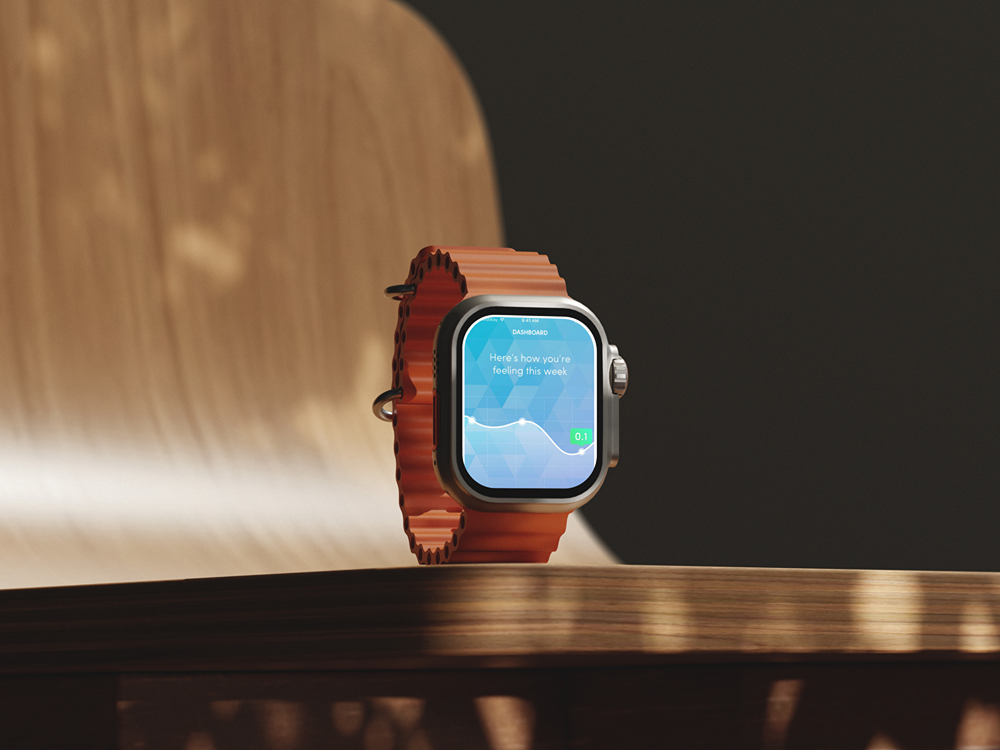
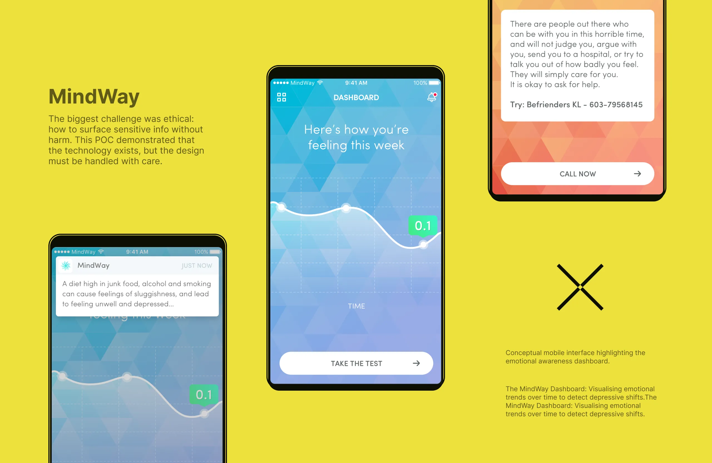

Concept Overview
AI as a mental health ally.
Depression signals often manifest in digital behaviour — the language we use and the images we share. MindWay aggregates these signals into a non-stigmatising awareness dashboard.
Depression signals often manifest in digital behaviour — the language we use and the images we share. MindWay aggregates these signals into a non-stigmatising awareness dashboard.

Rather than waiting for a crisis, MindWay proactively surfaces subtle shifts in emotional patterns — enabling earlier, gentler intervention and self-awareness.
Google Cloud NLP analysis of post text for emotional magnitude and tone over time to detect shifts in language patterns.
Cloud Vision API analysis of shared photos to derive non-verbal emotional cues from context and visual composition.

The biggest challenge was ethical: how to surface sensitive info without harm. This POC demonstrated that the technology exists, but the design must be handled with care.